Creating a development environment is the first step in working with Nintendo software and hardware. An environment is a self-contained set of software, so you can have multiple environments if you need to work on more than one project or if you want to experiment with additional projects. Nintendo Developer Interface (NDI) installs critical software, such as the Nintendo SDK, for you and can install additional software as needed.
To create an environment, follow these steps.
- Start NDI and click Dev Environments.
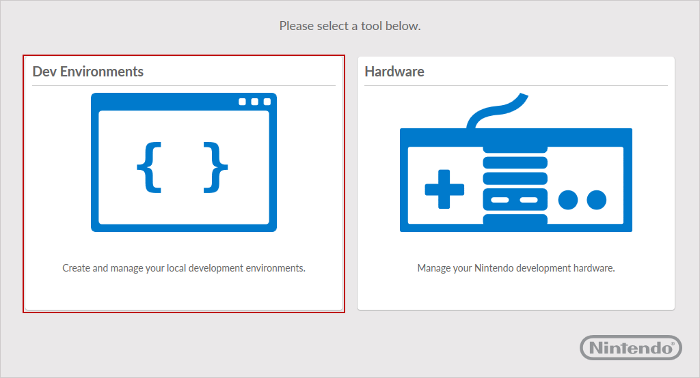
- Click Create My Own.
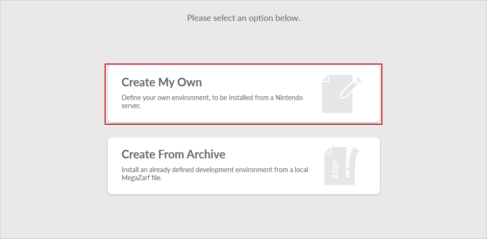
If there is already an environment on your system, before clicking Create My Own, click New Environment above the environment list on the left of the screen.
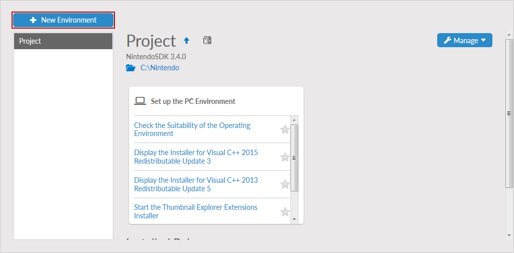
- Click Install To Disk.
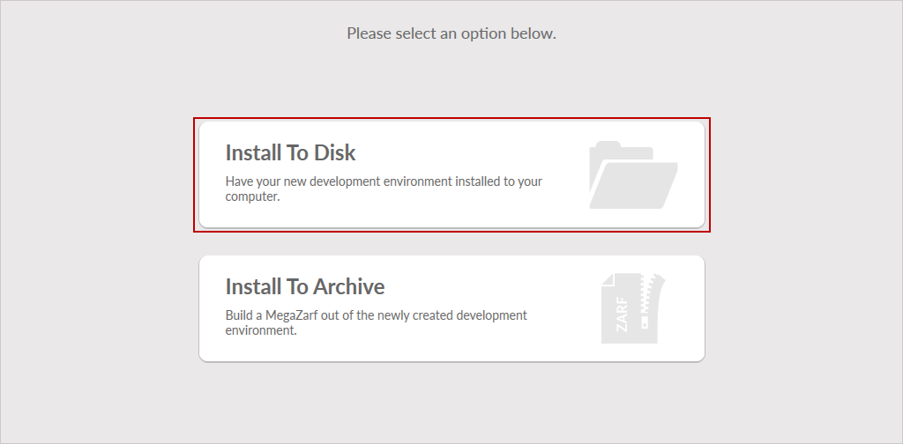
- If not already logged in to NDI, a dialog box is displayed requesting that you to log in to your account. Before continuing further, from the Server drop-down list box, select Nintendo Developer Portal and enter the Nintendo Developer ID that you use to access the Nintendo Developer Portal.
- Click Connect.
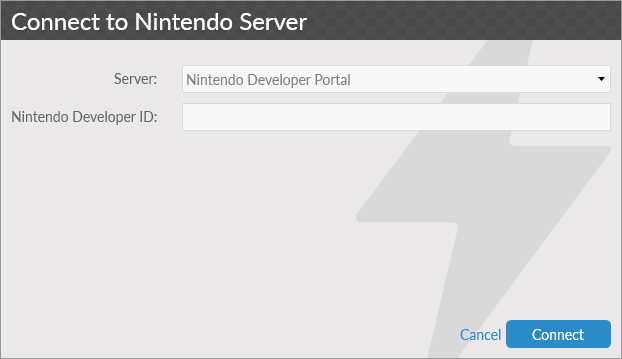
- After completing the log in process, select which Platform to develop for, and any additional Tool Set (these are standalone options that can be installed alongside the SDK, such as additional documentation). An additional option, Product, may also be avaliable. For more information, please see User Interface - Define New Environment. After making your selections, click Next to continue.
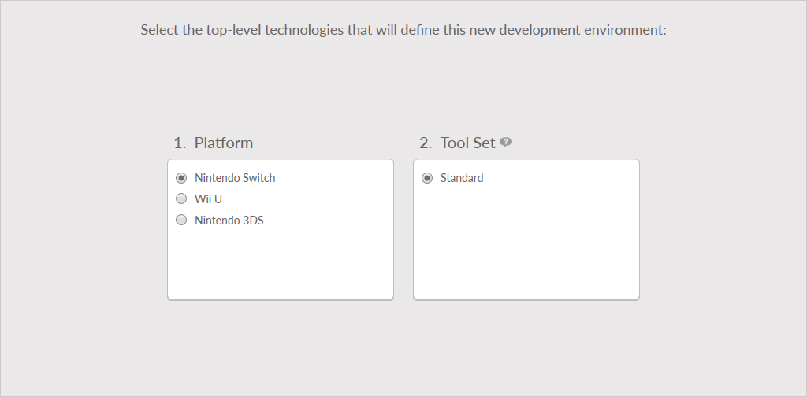
- Select the version of the Foundation software to install. Select a version compatible with the software versions the environment is intended to use. Click Next to continue.
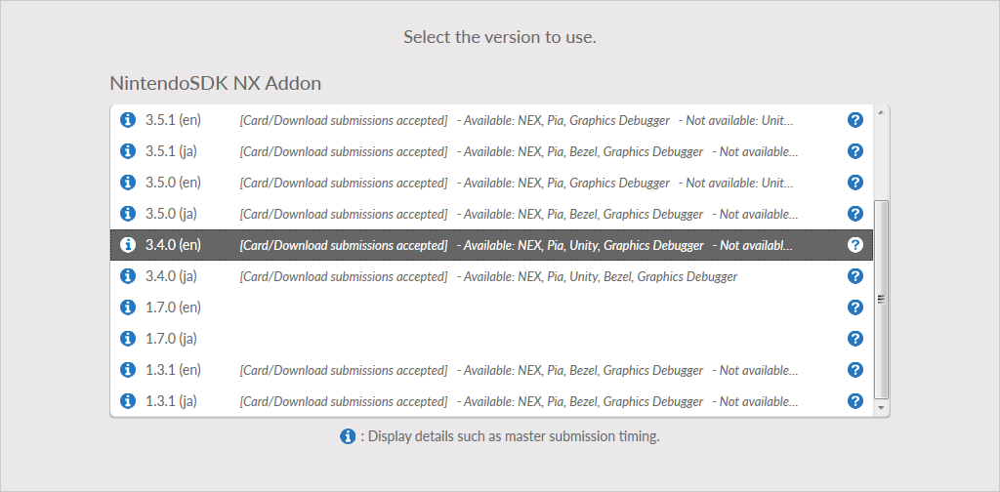
- On the choose location screen, enter the directory on the system where the environment will be installed to. Click Next to continue.
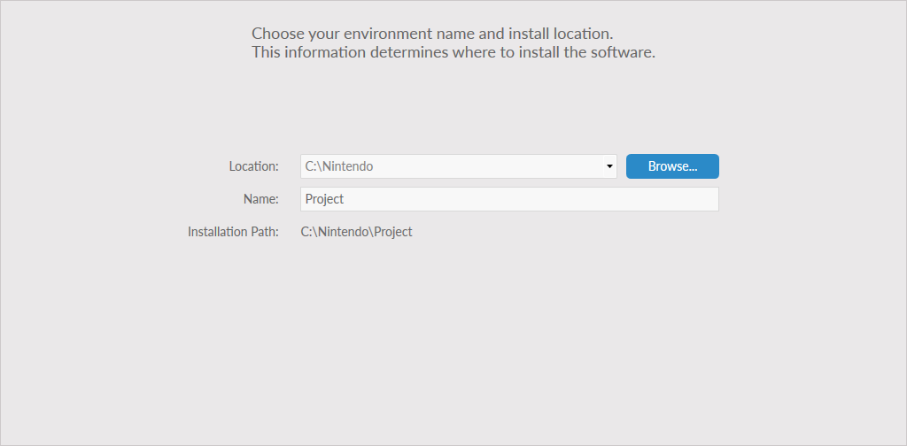
- On the configuration screen, in addition to the Foundation software, you can select additional software bundles that contain sets of software to install. After all selections are made, click Next.
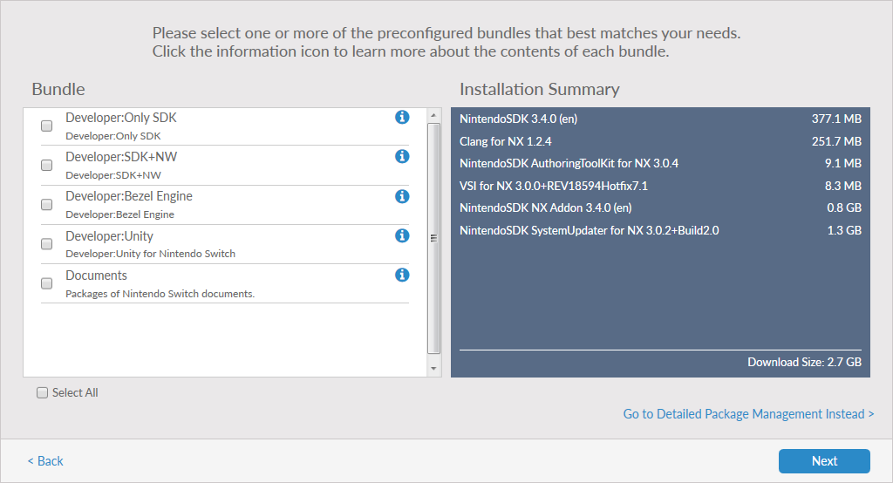
- A summary of the software to be installed is displayed, including the total size of the files to be installed. Click Install to start the download and installation process.
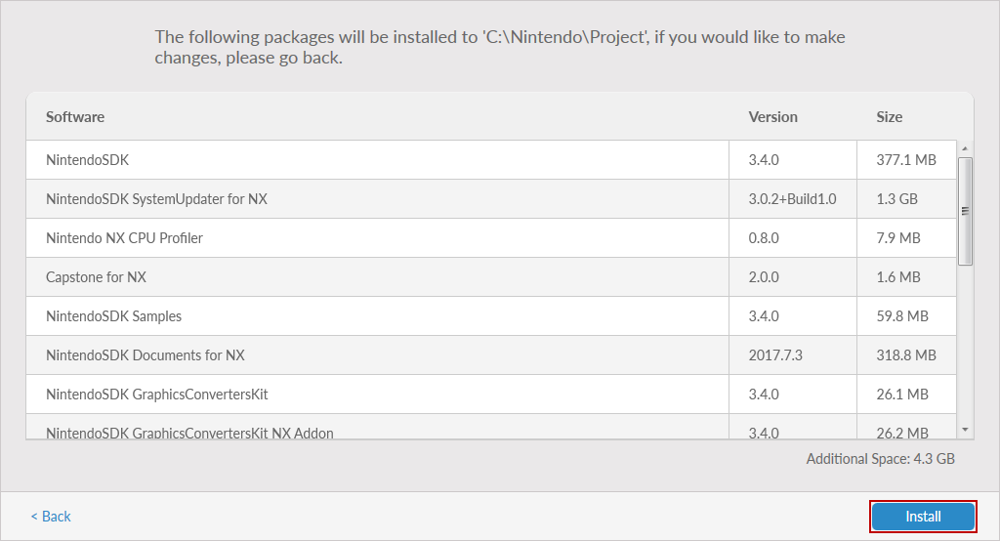
- After the installation has completed, click Finish.
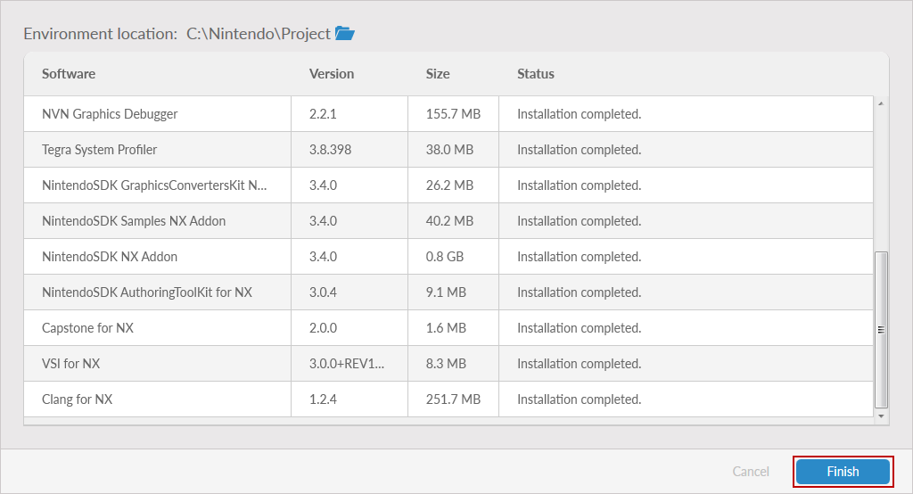
- NDI returns to the Dev Environments list and displays the new environment.
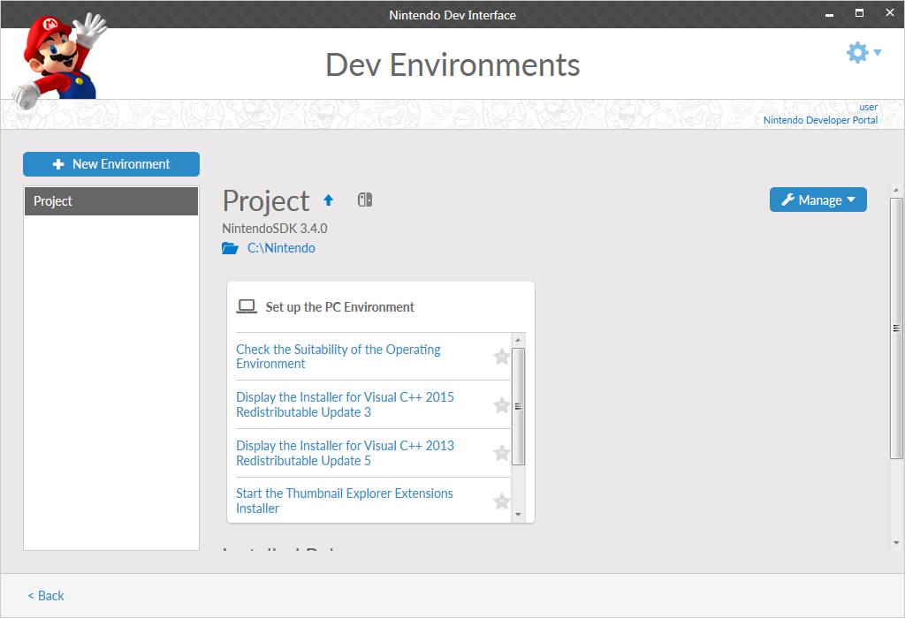